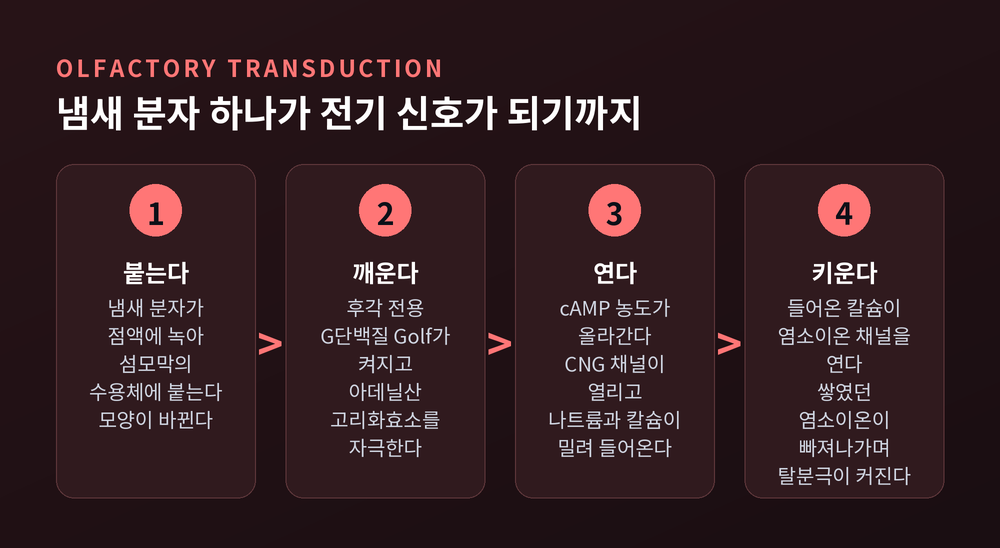
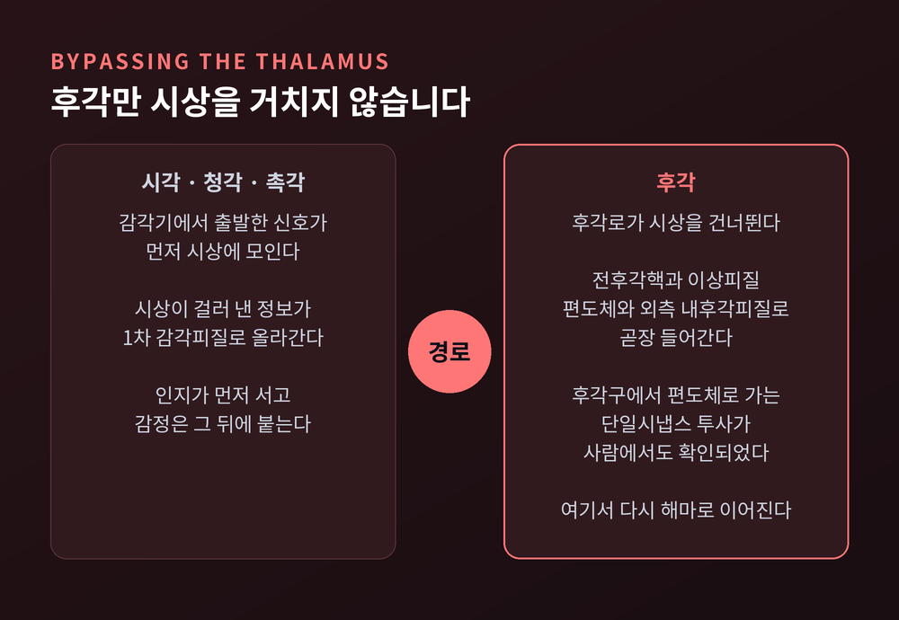
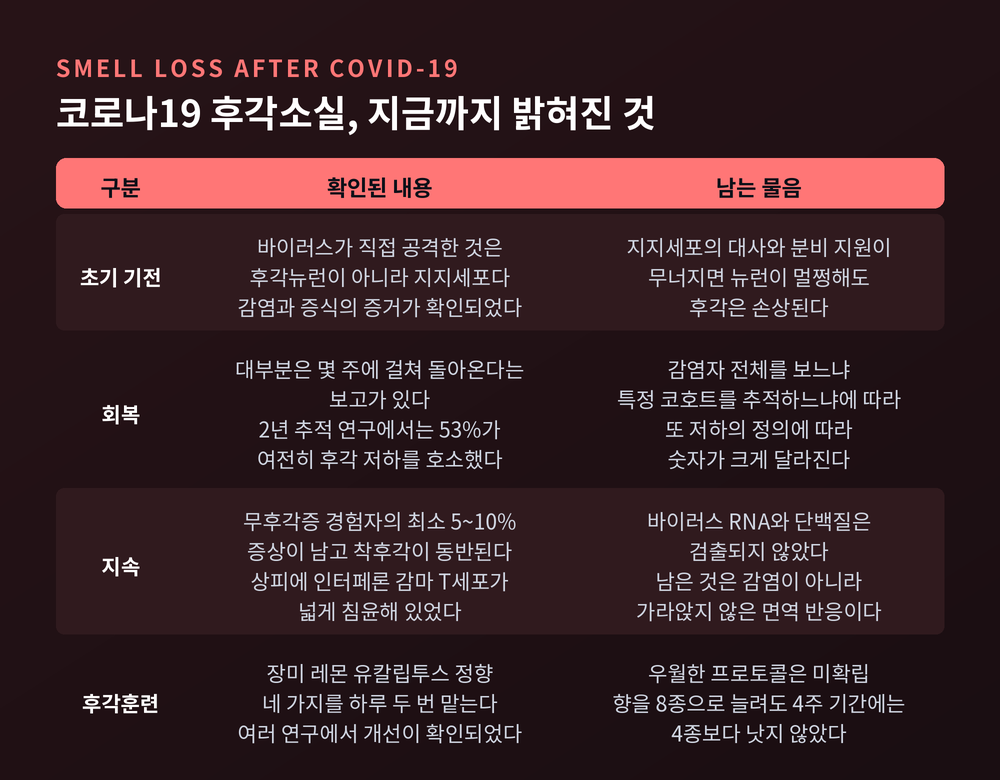
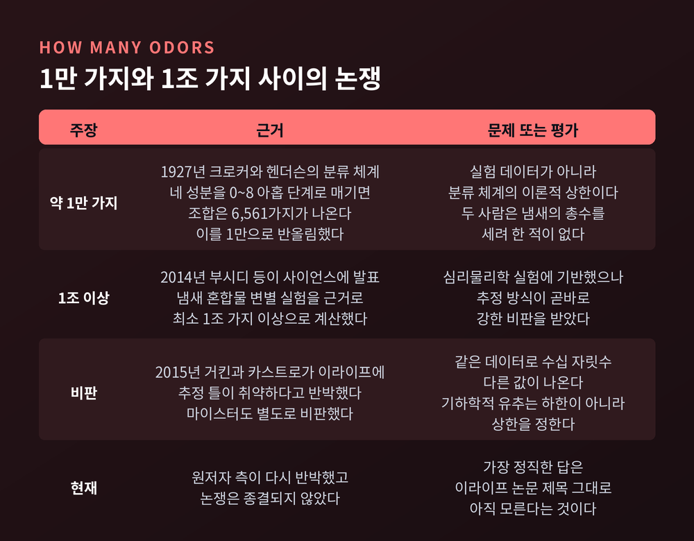

후각의 원리, 코가 수천 가지 냄새를 구별하고 기억과 연결하는 방법
이번 글에서는 후각의 원리를 정리해 보겠습니다.
코 안쪽 5제곱센티미터 남짓한 조직이 어떻게 수천 가지 냄새를 갈라내는지,
그리고 그 신호가 왜 하필 기억과 감정으로 곧장 흘러드는지 살펴보려 합니다.
냄새는 코의 천장에서 붙잡힙니다
사람의 후각상피는 약 5제곱센티미터입니다.
비강 천장, 콧구멍에서 7센티미터쯤 위이자 안쪽에 자리합니다.
개의 후각상피는 사람의 약 40배 넓습니다. 출발선부터 차이가 큽니다.
이 상피에 후각수용체 뉴런이 빽빽이 박혀 있습니다.
각 뉴런은 돌기를 하나 내밀고, 그 끝이 곤봉처럼 부풉니다.
거기서 움직이지 않는 섬모 10~15개가 점액층 속으로 뻗습니다.
수용체 단백질은 바로 이 섬모막에 있습니다.
그래서 냄새 분자는 공기 중에서 곧바로 수용체에 닿지 못합니다.
먼저 점액에 녹아야 합니다.
이 점액은 상피 곳곳의 보먼샘이 만들어 냅니다.
후각은 기체의 감각처럼 보이지만, 실제 접촉은 액체 안에서 일어납니다.
400개의 수용체로 수만 가지를 갈라내는 방법
1991년 리처드 액설과 린다 벅이 결정적인 답을 내놓았습니다.
두 사람은 후각수용체가 거대한 GPCR 계열일 것이고, 발현은 후각상피에만 국한될 것이라고 가정했습니다.
그 가정 위에서 축퇴 프라이머 PCR로 유전자를 훑었고, 7회 막관통 단백질을 코딩하는 다중유전자군 18개를 클로닝했습니다.
논문은 셀(Cell) 65권에 실렸고, 2004년 노벨 생리의학상으로 이어졌습니다.
수치는 조심해서 읽어야 합니다.
노벨상 위원회가 말한 "약 1,000개"는 두 사람이 연구한 생쥐 기준입니다.
같은 자료가 물고기는 약 100개, 사람은 생쥐보다 적다고 분명히 적어 두었습니다.
유전체 분석 결과 사람의 기능하는 후각수용체 유전자는 약 400개입니다.
그리고 비슷한 수의 망가진 유전자, 곧 위유전자를 함께 가지고 있습니다.
연구마다 위유전자를 400개로 보기도 하고 600개로 보기도 합니다. 기능과 비기능을 가르는 기준이 달라서입니다.
핵심은 개수가 아니라 쓰는 방식입니다.
하나의 수용체는 여러 냄새 분자에 반응합니다.
하나의 냄새 분자는 여러 수용체를 켭니다.
결합이 엄격하지 않습니다. 면역계의 항원 인식과 결정적으로 다른 지점입니다.
그래서 냄새는 개별 수용체가 아니라 켜진 수용체들의 조합으로 부호화됩니다.
1999년 벅 연구팀이 셀에 발표한 조합 코딩(combinatorial coding)입니다.
노벨상 위원회는 이 방식을 조각보나 모자이크의 색깔에 비유했습니다.
색 400개로 만들 수 있는 무늬의 수를 떠올려 보시면 이해가 빠릅니다.
냄새 분자 하나가 전기 신호가 되기까지
수용체에 분자가 붙으면 단백질 모양이 바뀝니다.
그 순간 후각 전용 G단백질인 G_olf가 깨어납니다.
G_olf는 III형 아데닐산 고리화효소를 자극하고, 세포 안 cAMP 농도가 오릅니다.
cAMP는 CNG 채널에 직접 달라붙어 문을 엽니다. 나트륨과 칼슘이 밀려듭니다.
여기서 후각만의 두 번째 증폭이 붙습니다.
들어온 칼슘이 칼슘 활성 염소이온 채널을 엽니다.
후각 섬모 안에는 염소이온이 능동적으로 쌓여 있어서, 채널이 열리면 염소이온이 바깥으로 빠져나갑니다.
그 결과 탈분극이 한 번 더 커집니다.
연구에 따르면 자극이 약할 때든 포화 상태일 때든 이 염소이온 전류가 지배적입니다.

한 뉴런은 오직 한 수용체만 켭니다
액설과 벅이 각자 밝혀낸 사실 중 가장 예상 밖이었던 것이 이것입니다.
후각수용체 뉴런 하나는 기능하는 수용체 유전자를 단 하나만 발현합니다.
'한 뉴런 – 한 수용체 규칙'입니다.
이 규칙은 다음 단계로 이어집니다.
같은 수용체를 쓰는 뉴런들의 축삭은 후각구의 같은 사구체 하나로 모입니다.
후각구에는 잘 정의된 미세영역인 사구체가 약 2,000개 있습니다.
수용체 종류 수의 대략 두 배입니다.
사구체 안에서 축삭은 승모세포와 만납니다.
승모세포 하나는 사구체 하나에만 반응합니다.
정보의 특이성이 흐려지지 않고 그대로 다음 단계로 넘어갑니다.
정리하면 이렇습니다.
코에서는 화학적 사건이던 것이, 후각구에서는 켜진 사구체들의 공간적 지도로 바뀝니다.
냄새가 뇌 안에서 그림이 되는 지점입니다.
후각만 시상을 거치지 않습니다
감각 정보는 대개 시상을 거쳐 1차 감각피질로 갑니다.
시각도 청각도 촉각도 그렇습니다.
후각만 예외입니다.
후각로는 시상을 건너뛰고 전후각핵, 후각결절, 이상피질로 직행합니다.
동시에 편도체와 외측 내후각피질로도 들어갑니다.
사람에서 후각구가 편도체 하위영역들로 보내는 단일시냅스 투사가 확인되었습니다.
여기서 다시 해마와 안와전두피질로 연결됩니다.
배선이 이러하니 결과도 달라집니다.
냄새로 떠오른 자전적 기억은 다른 단서로 떠오른 기억보다 더 오래되었고 더 정서적입니다.
허츠 연구팀은 같은 단서를 냄새로 줄 때와 다른 감각으로 줄 때를 비교했습니다.
냄새 쪽이 더 정서적이었고, 이는 자기보고뿐 아니라 심박수 상승 같은 생리 반응으로도 나타났습니다.
프루스트의 마들렌에서 이름을 딴 '프루스트 효과'입니다.
다만 한 가지는 분명히 해 두어야 합니다.
연구가 일관되게 보여 준 것은 정서적 강도와 생생함, 그리고 기억의 오래됨입니다.
냄새 기억이 더 정확하다는 뜻은 아닙니다.

여담이지만 맛도 상당 부분 후각입니다.
음식을 씹을 때 냄새 분자가 입에서 비강 뒤쪽으로 올라가 후각상피에 닿습니다. 후비강 후각입니다.
풍미는 후비강 냄새와 미각과 체성감각이 전측 섬피질에서 합쳐진 결과입니다.
감기에 걸려 "맛이 없다"고 느끼는 것은 대개 미각이 아니라 이 경로가 막힌 탓입니다.
30일에서 60일마다 새로 태어납니다
뇌의 신경세포는 대체로 평생 교체되지 않습니다.
후각수용체 뉴런은 다릅니다. 보통 30~60일마다 새것으로 바뀝니다.
바깥 공기에 직접 노출되는 자리이니 손상이 잦습니다.
그래서 상피 아래에 두 종류의 기저 줄기세포가 대기합니다.
구형 기저세포는 평상시 뉴런 생산을 도맡습니다.
수평 기저세포는 평소 조용히 잠들어 있다가, 뉴런을 넘어 상피 자체가 무너질 만큼 큰 손상이 오면 그때 깨어납니다.
예전에는 이 재생 능력이 사실상 무한하다고 여겨졌습니다.
지금은 그렇게 보지 않습니다.
노화와 함께 후각 줄기세포의 재생 능력에도 한계가 있다는 연구가 나와 있습니다.
코로나19가 남긴 것
코로나19는 후각을 대중적인 화제로 만들었습니다.
밝혀진 기전은 다소 뜻밖이었습니다.
바이러스가 직접 공격한 것은 후각뉴런이 아니라 지지세포였습니다.
지지세포에서 감염과 바이러스 증식의 증거가 확인되었습니다.
지지세포는 후각뉴런에 대사와 분비와 구조를 지원합니다.
이 뒷받침이 무너지면 뉴런 자체가 멀쩡해도 후각은 손상됩니다.
회복 수치는 자료마다 차이가 큽니다.
대부분의 환자에서 후각은 몇 주에 걸쳐 돌아온다는 보고가 있습니다.
반면 2년 추적 전향 연구에서는 53%가 여전히 후각 저하를, 42%가 미각 저하를 호소했습니다.
감염자 전체를 보느냐 특정 코호트를 추적하느냐에 따라, 또 '저하'의 정의에 따라 숫자가 달라집니다.
무후각증을 겪은 사람 중 최소 5~10%에서는 증상이 지속되며, 냄새가 왜곡되는 착후각이 함께 오는 경우가 많습니다.
오래 가는 후각소실의 정체도 조금씩 드러났습니다.
지속성 환자의 후각상피에서는 인터페론 감마를 내는 T세포가 넓게 침윤해 있었습니다.
골수계 세포 구성도 달라져 있었습니다.
정작 바이러스 RNA나 단백질은 검출되지 않았는데, 지지세포의 유전자 발현은 계속되는 염증 신호에 반응하는 모습이었습니다. 후각수용체 뉴런의 수도 줄어 있었습니다.
남아 있는 것은 바이러스가 아니라 가라앉지 않은 면역 반응이었던 셈입니다.

치료로는 후각훈련이 가장 널리 쓰입니다.
후멜 등이 제안한 방식은 장미, 레몬, 유칼립투스, 정향 네 가지 향을 하루 두 번 맡는 것입니다.
새 후각뉴런 형성을 자극한다는 설명과, 중추에서 냄새 자극을 등록하는 능력이 올라간다는 설명이 함께 제기됩니다.
효과는 여러 연구에서 확인되었습니다만, 어떤 프로토콜이 우월한지는 아직 확립되지 않았습니다.
향을 8종으로 늘린 강화 훈련도 4주 기간에서는 4종 훈련보다 낫지 않았습니다.
사람은 몇 가지 냄새를 구별할 수 있을까
가장 유명한 숫자는 "약 1만 가지"입니다.
2004년 노벨상 위원회 보도자료에도 이 표현이 등장합니다.
그런데 이 숫자의 뿌리는 실험 데이터가 아닙니다.
1927년 크로커와 헨더슨이 냄새를 향기로움, 산, 탄내, 카프릴산 네 성분으로 나눈 분류 체계를 만들었습니다.
각 성분을 0에서 8까지 아홉 단계로 매기면 조합은 6,561가지가 나옵니다.
훗날 크로커가 이를 1만으로 반올림했고, 그 값이 100년 가까이 인용되어 왔습니다.
두 사람은 애초에 사람이 맡을 수 있는 냄새의 총수를 세려 한 적이 없습니다.
2014년에는 정반대 방향의 숫자가 나왔습니다.
부시디 등이 사이언스에 냄새 혼합물 변별 실험을 근거로 "최소 1조 가지 이상"을 제시했습니다.
반박도 곧바로 따라왔습니다.
거킨과 카스트로는 2015년 이라이프(eLife) 논문에서 이 추정 틀이 취약하다고 지적했습니다.
같은 데이터로 원래 값보다 수십 자릿수 크거나 작은 값을 얼마든지 만들어 낼 수 있다는 것입니다.
피험자 수 같은 설계 변수 하나만 조금 바꿔도 결과가 크게 흔들린다고 했습니다.
결정적으로, 사용된 기하학적 유추는 하한이 아니라 상한을 정합니다.
결론은 "최소 1.72조"가 아니라 "최대 1.72조"여야 한다는 뜻입니다.
마이스터도 별도로 같은 취지의 비판을 냈습니다.
원저자 측은 다시 반박했고, 논쟁은 아직 끝나지 않았습니다.
가장 정직한 답은 거킨과 카스트로의 논문 제목 그대로입니다. 아직 모른다는 것입니다.

끝으로 한 마디만 더 드리겠습니다.
후각의 원리를 따라가 보면 남는 인상은 정교함보다 유연함 쪽입니다.
수용체는 냄새 분자를 정확히 알아보지 않습니다. 대충 알아봅니다.
대신 대충 아는 수용체 400개가 동시에 손을 들고, 그 손의 조합이 냄새의 이름이 됩니다.
"정확하지 않아서 오히려 넓다."
구별할 수 있는 냄새가 몇 가지인지는 아직 아무도 모릅니다.
다만 오늘 마신 커피의 향이 십 년 전 어느 아침을 데려온다면,
그것은 코가 시상을 건너뛰고 편도체에 곧장 말을 건 결과입니다.